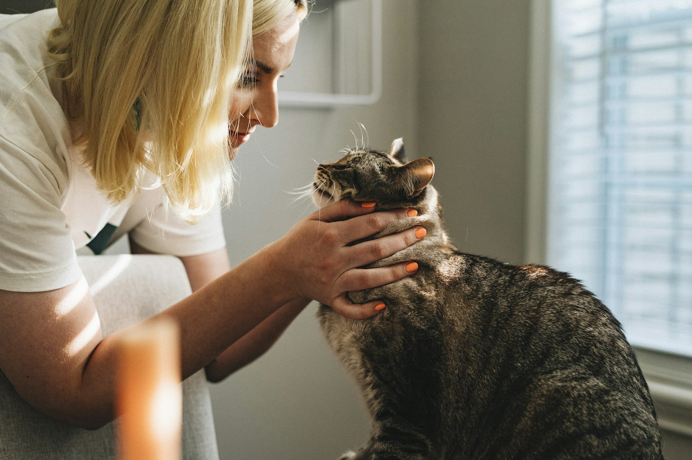

Kozármisleny · saját praxis 2008 óta
Gondoskodás, ahogy kedvence megérdemli.
Kisállatrendelő, ahol a nyugati orvoslás pontossága és a kiegészítő terápiák szemlélete együtt szolgálja kutyája, macskája egészségét.
+36 30 30 11 789 Szolgáltatások
- 17+ év saját praxis
- 2003 állatorvosi diploma
- 2025 alternatív módszerek szakállatorvosa

Bemutatkozás
Dr. Hegyi Orsolya állatorvos
„2003-ban végeztem a budapesti Állatorvostudományi Egyetemen. Diplomám megszerzése után Pécsett dolgoztam több kisállatrendelőben, majd 2008 júliusában megnyitottam saját praxisomat Kozármislenyben."
A nyugati orvoslás mellett kiegészítő és alternatív terápiás módszerekkel is foglalkozom. Szabadidőmet legszívesebben a természetben töltöm – lóháton vagy gyalogosan.
- 2003 Állatorvosi diploma – Állatorvostudományi Egyetem, Budapest
- 2003–08 Kisállatrendelői gyakorlat Pécsett
- 2008 Saját praxis megnyitása Kozármislenyben
- 2025 Kiegészítő és alternatív módszerek szakállatorvosa – ÁTE
Alternatív állatgyógyászat
Nyugati orvoslás, keleti szemlélet
2023 és 2025 között elvégeztem az Állatorvostudományi Egyetem kiegészítő és alternatív módszerek szakállatorvos képzését. Így ma már a klasszikus gyógymódok mellett a hagyományos kínai orvoslás eszköztárát is alkalmazom a mindennapi munkám során.
Ha nyitottak ezekre a módszerekre, vagy a nyugati orvoslás már elérte határait kedvencük betegségének kezelésében, forduljanak hozzám bizalommal.
- Akupunktúra
- Fitoterápia
- Homeopátia
- Viselkedésterápia
- Fizioterápia
- Manuálterápia
Szolgáltatások
Minden, amire kedvencének szüksége lehet
A megelőzéstől a műtéti beavatkozásokig – egy helyen, ismerős környezetben.
Védőoltások
Kötelező és ajánlott vakcinák kutyáknak, macskáknak – oltási terv kölyökkortól.
Belgyógyászat
Általános kivizsgálás, betegségek diagnosztikája és kezelése.
Bőrgyógyászat
Allergiák, viszketés, fül- és bőrproblémák felderítése és kezelése.
Sebészet, ivartalanítás
Rutin- és lágyszöveti műtétek, ivartalanítás biztonságos altatásban.
Mikrochip-beültetés
Kötelező jelölés és regisztráció gyorsan, fájdalommentesen.
Állatútlevél
Uniós kisállat-útlevél kiállítása külföldi utazáshoz.
Ambuláns betegellátás
Vizsgálat, kezelés és utógondozás rendelői körülmények között.
Alternatív terápiák
Akupunktúra, fitoterápia és további kiegészítő gyógymódok.
Hasznos tudnivalók
Tanácsok felelős gazdiknak
Rövid, közérthető írások a leggyakoribb kérdésekről – a megelőzés mindig egyszerűbb, mint a gyógyítás.
Mikor forduljunk állatorvoshoz?
A korán felismert betegség egyszerűbben és nagyobb eséllyel gyógyítható – ezekre a jelekre figyeljen.
Elolvasom → KutyaVédőoltások kutyáknak
Veszettség, parvo, szopornyica és társaik – javasolt oltási sor kölyökkortól felnőttkorig.
Elolvasom → MacskaVédőoltások macskáknak
Külön oltási terv lakásban tartott és kijáró cicáknak – mit, mikor és miért érdemes beadatni.
Elolvasom → ParazitákKullancsok
Babesiosis, Lyme-kór és társaik – miért életveszélyes egy apró vérszívó, és hogyan védekezzünk.
Elolvasom → ParazitákBolhásság
Egyetlen csípés is elég a bolhaekcémához – a hatékony védekezés szabályai kedvencnek és otthonnak.
Elolvasom → ParazitákFérgesség
A férges állat legtöbbször tünetmentes, mégis fertőzhet – embert is. A negyedéves féreghajtás szerepe.
Elolvasom → BőrgyógyászatAllergia kutyáknál
Vakarózás, fülgyulladás, bőrpír? Az allergia típusai, felismerése és kezelési lehetőségei.
Elolvasom → MegelőzésIvartalanítás
Miért él egészségesebben és tovább az ivartalanított állat – előnyök a kedvenc és a gazdi oldaláról.
Elolvasom → MegelőzésTévhitek az ivartalanításról
„Egyszer elletni kell", „el fog hízni", „megváltozik" – a leggyakoribb tévhitek és a valóság.
Elolvasom →Kapcsolat
Várjuk szeretettel
Cím
7761 Kozármisleny, Orgona u. 7.
Telefon
Rendelési idő
Hétfő, szerda: 9–11 és 16–18 · kedd, csütörtök, péntek: 16–18
Időpontegyeztetés szükséges.